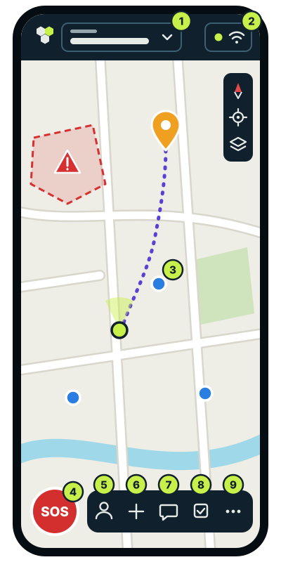

Help
Tesel on one page.
What each thing on the screen is, and how the usual things are done.

-
Your group
Who you are with. Tap it to invite, organise or change group.
-
Connection
The green dot: what you send gets through. Tap it to see how, or to pair a radio.
-
A teammate
Each dot is someone in the group; the green one is you. Tap one to go to them.
-
SOS
Calls the whole group for help, with your position.
-
Me
Your name, how you are, and whether you share your position.
-
Add
Everything new starts here: marker, route, area, task or report.
-
Chat
Talk with the group. The reports are here too.
-
Tasks
What needs doing and who is doing it. Yours first.
-
More
Measure, go to a coordinate, the diary, offline maps, settings and this help.
How do I…?
-
Call for help
4SOS → what is happening → Send SOS
-
Answer an SOS
Acknowledge → Guide me
-
Let the group see me
5Me → Share my position
-
Go to a teammate
3tap them → Guide me
-
Mark a danger
6Add → Area → draw it → Danger area
-
Give a task
8Tasks → New task
-
Invite someone
1group → Invite → they scan the QR
-
Have the map without coverage
9More → Offline maps → Download
Without coverage
Keep using Tesel: what you send waits on the phone and leaves by itself as soon as there is a connection. With a LoRa radio, the group keeps talking without the internet. Download the map before you set out. More in the guide.
Anything else? The guide tells it plate by plate: preparing the team, tasks and sweeps, the radios, the diary and security. This page fits one sheet: print it and take it along.